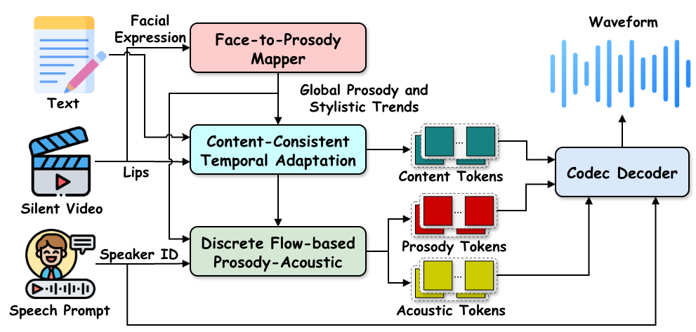
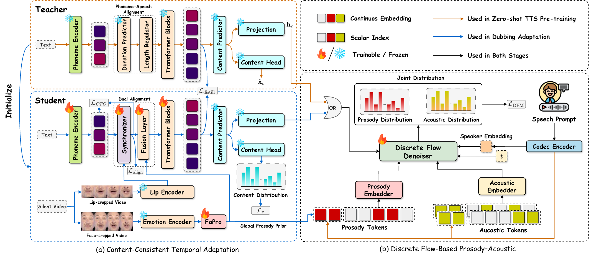
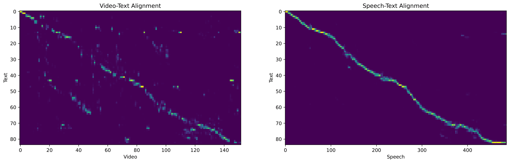

DiFlowDubber
Discrete Flow Matching for Automated Video Dubbing via Cross-Modal Alignment and Synchronization
——— CVPR 2026 Findings ———
1.
2.  3.
3.
Video dubbing has broad applications in filmmaking, multimedia creation, and assistive speech technology. Existing approaches either train directly on limited dubbing datasets or adopt a two-stage pipeline that adapts pre-trained text-to-speech (TTS) models, which often struggle to produce expressive prosody, rich acoustic characteristics, and precise synchronization. To address these issues, we propose DiFlowDubber with a novel two-stage training framework that effectively transfers knowledge from a pre-trained TTS model to video-driven dubbing, with a discrete flow matching generative backbone. Specifically, we design a FaPro module that captures global prosody and stylistic cues from facial expressions and leverages this information to guide the modeling of subsequent speech attributes. To ensure precise speech-lip synchronization, we introduce a Synchronizer module that bridges the modality gap among text, video, and speech, thereby improving cross-modal alignment and generating speech that is temporally synchronized with lip movements. Experiments on two primary benchmark datasets demonstrate that DiFlowDubber outperforms previous methods across multiple metrics.

Figure 1: Overall inference pipeline of DiFlowDubber. The Face-to-Prosody Mapper module predicts prosody priors that capture global prosody and stylistic cues from facial expressions. The Content-Consistent Temporal Adaptation module generates discrete content tokens conditioned on lip movements, text, and prosody priors, ensuring consistent with the target text transcription and temporal alignment. Discrete Flow-based Prosody-Acoustic module generates diverse yet globally consistent prosody tokens under the guidance of the prosody prior, together with corresponding acoustic tokens. The speech waveform is synthesized from the predicted tokens and speaker embedding via a Codec Decoder.

Figure 2: Pipeline of the proposed DiFlowDubber. The first stage performs zero-shot TTS pre-training, where a simple deterministic content modeling architecture efficiently captures linguistic structure (orange dashed box). For prosody and acoustic attributes, we adopt the (b) Discrete Flow-Based Prosody-Acoustic (DFPA) module to model expressive prosodic variations and realistic acoustic diversity from the corpus. In the second stage, the model is adapted to V2C task. The (a) Content-Consistent Temporal Adaptation (CCTA) module transfers consistent content knowledge from the TTS domain and generates temporally aligned content representations, while the FaPro module extracts a global prosody prior from facial expression cues. The DFPA module then models the joint distribution of prosody and acoustic tokens conditioned on the prosody prior and latent content representations.
Sample 1: So already we have a prediction from our quantum machanical understanding of bonding.
| Ground-Truth | HPMDubbing | StyleDubber | Speaker2Dubber | ProDubber | EmoDubber | DiFlowDubber |
|---|---|---|---|---|---|---|
Sample 2: In fact if we write the equilibrium expression for this we'll find the equilibrium constant is less than one.
| Ground-Truth | HPMDubbing | StyleDubber | Speaker2Dubber | ProDubber | EmoDubber | DiFlowDubber |
|---|---|---|---|---|---|---|
Sample 3: And we expect that we'll have an increase in that vapor intensity.
| Ground-Truth | HPMDubbing | StyleDubber | Speaker2Dubber | ProDubber | EmoDubber | DiFlowDubber |
|---|---|---|---|---|---|---|
Sample 1: Lay blue with d seven now.
| Ground-Truth | HPMDubbing | StyleDubber | Speaker2Dubber | ProDubber | EmoDubber | DiFlowDubber |
|---|---|---|---|---|---|---|
Sample 2: Lay blue by t eight now.
| Ground-Truth | HPMDubbing | StyleDubber | Speaker2Dubber | ProDubber | EmoDubber | DiFlowDubber |
|---|---|---|---|---|---|---|
Sample 3: Set white by i six please.
| Ground-Truth | HPMDubbing | StyleDubber | Speaker2Dubber | ProDubber | EmoDubber | DiFlowDubber |
|---|---|---|---|---|---|---|
We present qualitative comparisons between DiFlowDubber and baseline methods. The highlighted regions (in red boxes) indicate areas where different models show noticeable discrepancies, with our results remaining most consistent with the ground truth. This demonstrates that our approach effectively preserves pitch continuity and prosodic dynamics while maintaining alignment with lip movements in the corresponding video frames.
Visualization of the attention maps learned by the Synchronizer module. The left panel shows the video-text alignment between lip-frame features and phoneme embeddings, while the right panel shows the speech-text alignment between discrete speech tokens and phonemes.
